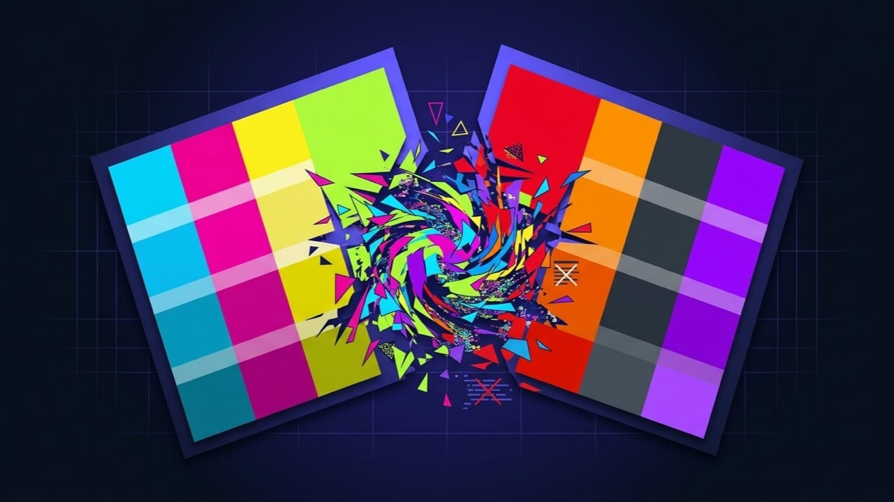

Something Broke After a Theme Change? Here's How to Isolate It.
The layout shifted, a feature disappeared, or the styling looks wrong, and it started right around a theme update, a child theme edit, or a switch to a new theme entirely. A theme conflict is diagnosed the same structured way as a plugin conflict — by isolating variables one at a time — but the specific places to look are different.

What is the problem?
A theme conflict means the active theme — its own template code, its relationship with a child theme, or how it interacts with your content or page builder — is the actual source of a layout, styling, or functionality problem, as opposed to a plugin conflict, which is caused by installed plugins fighting each other or the theme instead. Because both can produce very similar symptoms (broken layout, missing styling, a feature that stopped working), the two get confused often, and diagnosing them needs a genuinely different first move.
Quick answer: temporarily activate a default WordPress theme (Twenty Twenty-Four or similar) without changing any plugins. If the problem disappears, it's the theme; if it persists exactly the same, the theme was never the cause and it's worth checking plugins instead.
This test works because it changes exactly one variable — the active theme — while leaving every plugin, all your content, and your database completely untouched, which is what makes the result trustworthy rather than a coincidence.
Common symptoms
- Layout shifted, columns collapsed, or spacing looks wrong right after a theme update or switch
- Custom styling or a color scheme reverted to theme defaults after an update
- A specific theme feature (a custom header, a widget area, a template) disappeared or stopped rendering
- Fonts, icons, or specific page elements display incorrectly only on certain page templates, not sitewide
- A child theme's customizations stopped applying after the parent theme updated
- The site works fine with a default theme active, but the problem returns the moment the original theme is reactivated
Why does this happen?
Themes control how your content is structured and displayed through template files and functions that plugins and WordPress core both depend on being stable. A theme update can rename a function, restructure a template file, or change a CSS class name that other things — a child theme, a page builder, a plugin's styling — were relying on staying the same. Child theme setups are particularly exposed to this: a child theme overrides specific parent files or functions by name, and if the parent renames or restructures what it's overriding, the override can silently stop working, or worse, conflict with the new parent code in an unpredictable way.
Outdated, abandoned, or nulled themes compound this risk further, since they don't receive the updates that would normally keep them compatible with current WordPress core, PHP versions, or the plugins running alongside them.
Common technical causes
- A parent theme update changing a function or file structure a child theme's overrides depend on, breaking the override silently
- Theme CSS or JavaScript conflicting with a page builder's own output, particularly after either the theme or the builder updates independently
- An outdated theme incompatible with the current WordPress core or PHP version, especially common with themes no longer actively maintained by their developer
- A nulled or pirated theme copy that's been modified from the original, sometimes carrying broken code or, in worse cases, injected malicious code
- Theme customizer settings or custom CSS lost or reset after a major theme update, if those settings weren't stored in a way the update preserved
- Two themes' worth of leftover code after switching themes without properly cleaning up the previous theme's widgets, customizer settings, or shortcodes
How to diagnose it
- Activate a default WordPress theme (Twenty Twenty-Four or similar) without touching any plugins, and check whether the problem clears. This single test tells you more than almost anything else at this stage.
- If it's a child theme, temporarily activate the parent theme alone to see whether the problem is in the parent, the child's overrides, or the relationship between them.
- Check the theme's official changelog for the version that introduced the problem, looking specifically for mentions of renamed functions, template changes, or deprecated features.
- Open the browser console for JavaScript errors and inspect affected elements for CSS that isn't applying as expected, which often points directly at the specific conflicting rule.
- Confirm the theme is a genuine, currently supported copy from the original developer or a legitimate marketplace, not a nulled or unofficial download, especially if the site was inherited or its history is uncertain.
How to fix it, step by step
- If the default-theme test confirmed the theme, check for a newer theme version or a developer changelog addressing the specific issue before making any custom changes yourself.
- For a child theme override that stopped working, compare the child theme's file against the current parent theme version to find what changed, then update the override to match the new structure.
- For a CSS conflict with a page builder, use browser DevTools to identify the specific conflicting rule and add a targeted, appropriately scoped override rather than broad !important overrides that can cause further conflicts later.
- If the theme is genuinely abandoned with no updates available, that's the point where evaluating a modern, actively maintained replacement theme becomes the right move, rather than continuing to patch around an unmaintained codebase.
- If a nulled theme copy was identified, replace it with a legitimate licensed copy as a priority, independent of the original symptom, given the security exposure involved.
- Re-test the specific broken feature directly after any fix, not just a general homepage check, since theme conflicts are often scoped to one template or feature rather than the whole site.
When this needs professional help
Running the default-theme test and checking a changelog for a relevant change are realistic to do yourself. It's worth bringing in a developer when:
- The fix needs editing theme template files or child theme overrides directly, and a mistake there could break the site further
- The theme is abandoned and evaluating, migrating to, and rebuilding key templates in a replacement theme is a genuine project, not a quick fix
- The conflict is with a page builder's own output and needs a properly scoped CSS or code fix rather than a blunt override
- The theme turns out to be a nulled copy and the site needs both the immediate conflict resolved and a security review
How I can help
Theme conflicts get misdiagnosed as plugin problems more often than the reverse, mostly because the default-theme test that would clarify it quickly is rarely the first thing people try. I run that isolation test properly, trace the exact function or CSS rule responsible once the theme is confirmed as the cause, and apply a fix scoped to that specific issue rather than a theme replacement that isn't actually necessary.